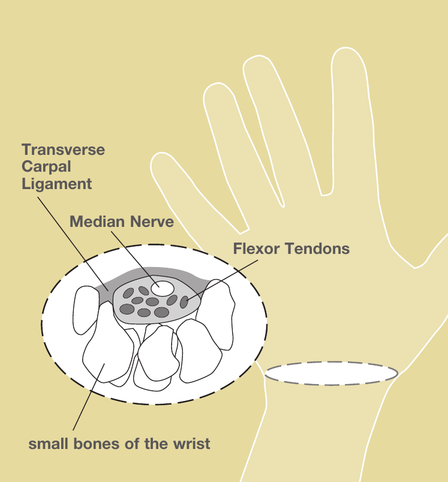
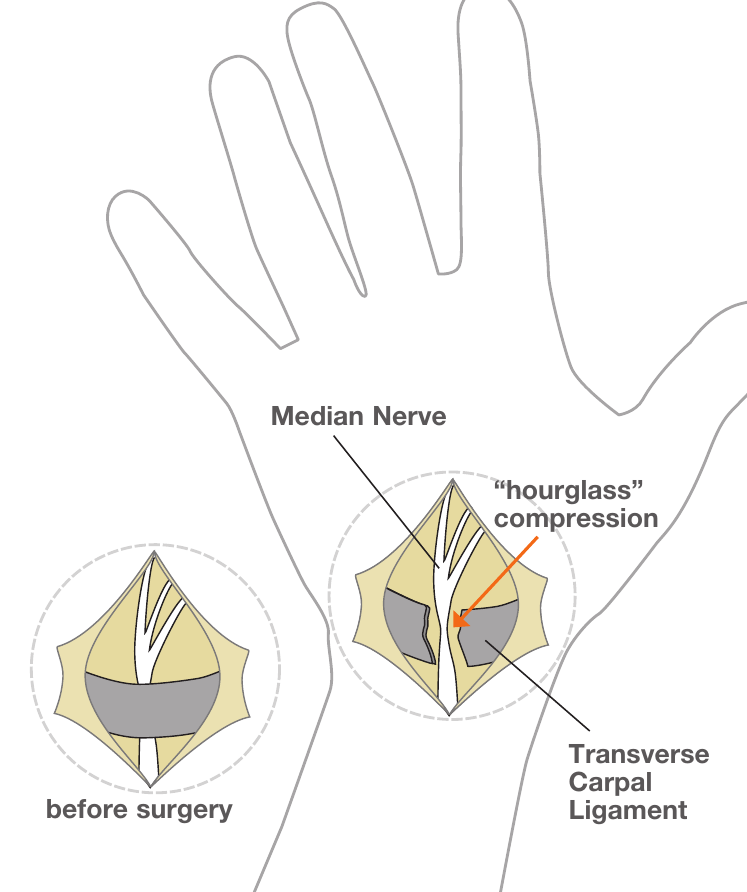

রোগ
কার্পাল টানেল সিনড্রোম
শরীরের সবচেয়ে সাধারণ স্নায়ু সংকোচন। স্প্লিন্ট, ইনজেকশন বা একটি স্বল্পমেয়াদী আউটপেশেন্ট অস্ত্রোপচারের মাধ্যমে চিকিৎসাযোগ্য।

চিত্র © American Society for Surgery of the Hand
কার্পাল টানেল সিনড্রোম কী?
মিডিয়ান স্নায়ু ঘাড় থেকে বাহু হয়ে হাতে পৌঁছায়, কব্জিতে কার্পাল টানেল নামক একটি সরু পথ দিয়ে যায়। টানেলটি সংকীর্ণ হয়ে গেলে স্নায়ুটি চাপে পড়ে। সময়ের সাথে এটি হাতে অসাড়তা, ঝিনঝিন এবং দুর্বলতা সৃষ্টি করে।
সাধারণ লক্ষণ
- বুড়ো আঙুল, তর্জনী, মধ্যমা এবং অনামিকার অর্ধেক অংশে অসাড়তা বা ঝিনঝিন
- রাতে ঘুম ভেঙে যাওয়া এবং উপশমের জন্য হাত ঝাঁকাতে হওয়া লক্ষণ
- জিনিস পড়ে যাওয়া বা শার্টের বোতাম লাগানোর মতো সূক্ষ্ম কাজে অসুবিধা
- চিমটি কাটা বা ধরার সময় দুর্বলতা
- পুরো হাত অসাড় লাগার অনুভূতি, যদিও সাধারণত কনিষ্ঠ আঙুল রক্ষা পায়
এটি কেন হয়?
বেশিরভাগ মানুষের ক্ষেত্রে কোনো একক কারণ থাকে না। টানেলটি কেবল সরু এবং বয়স বা ব্যবহারের সাথে টেন্ডনের চারপাশের আবরণ মোটা হয়ে যায়। নারীদের মধ্যে, ডায়াবেটিস বা থাইরয়েড রোগে আক্রান্তদের মধ্যে, গর্ভাবস্থায় এবং দীর্ঘক্ষণ ধরা বা কম্পনযুক্ত কাজে কার্পাল টানেল সিনড্রোম বেশি দেখা যায়।
চিকিৎসার বিকল্প
অস্ত্রোপচার ছাড়া চিকিৎসা
- রাতের স্প্লিন্ট। একটি কব্জির স্প্লিন্ট যা রাতে কব্জি সোজা রাখে, স্নায়ুর উপর চাপ কমায় এবং অনেক রোগীকে সাহায্য করে, বিশেষ করে রোগের প্রথম দিকে।
- কার্যকলাপে পরিবর্তন। কব্জি বাঁকানো অবস্থান এড়ানো এবং পুনরাবৃত্তিমূলক কাজ থেকে বিরতি নেওয়া সাহায্য করতে পারে।
- স্টেরয়েড ইনজেকশন। কার্পাল টানেলে কর্টিসোন ইনজেকশন স্নায়ুর চারপাশের ফোলা কমাতে পারে। উপশম প্রায়ই সাময়িক কিন্তু কয়েক মাস স্থায়ী হতে পারে এবং কখনও কখনও রোগ নির্ণয় নিশ্চিত করে।
অস্ত্রোপচারের চিকিৎসা
- কার্পাল টানেল রিলিজ। একটি ছোট অস্ত্রোপচার যা স্নায়ুর উপরের শক্ত লিগামেন্টটি খুলে দেয়। এটি হাতের তালুতে একটি ছোট কাটা (ওপেন) দিয়ে অথবা ক্যামেরাসহ একটি ক্ষুদ্র কাটা (এন্ডোস্কোপিক) দিয়ে করা যায়। এতে প্রায় ১০ থেকে ১৫ মিনিট সময় লাগে, স্থানীয় অবশকরণ ব্যবহার করা হয় এবং আপনি একই দিনে বাড়ি ফিরে যান। বেশিরভাগ রোগী কয়েক দিনের মধ্যে হালকা কাজে হাত ব্যবহার করেন। দীর্ঘদিন ধরে থাকা অসাড়তা সারতে কয়েক মাস লাগতে পারে; রাতের লক্ষণ সাধারণত দ্রুত উন্নত হয়।

চিত্র © American Society for Surgery of the Hand
আপনার ভিজিটে কী আশা করবেন
ডা. বারেরা আপনার লক্ষণ সম্পর্কে জিজ্ঞাসা করবেন এবং আপনার হাত পরীক্ষা করবেন, যার মধ্যে কব্জিতে টোকা দিয়ে বা বাঁকিয়ে ঝিনঝিন অনুভূতি তৈরি করার পরীক্ষা অন্তর্ভুক্ত। প্রায়ই পরীক্ষা থেকেই রোগ নির্ণয় স্পষ্ট হয়। রোগ নির্ণয় নিশ্চিত করতে, তীব্রতা মাপতে এবং অন্যান্য সমস্যা বাদ দিতে একটি স্নায়ু পরীক্ষা (ইএমজি) দেওয়া হতে পারে। সাধারণত ইমেজিংয়ের প্রয়োজন হয় না।
যদি হঠাৎ তীব্র ব্যথা হয়, বুড়ো আঙুল একেবারেই নাড়াতে না পারেন, অথবা আঙুল ফ্যাকাশে, নীল বা ঠান্ডা হয়ে যেতে দেখেন তবে আমাদের কল করুন। নতুন অসাড়তার সাথে খোলা কাটা বা সাম্প্রতিক কব্জির আঘাত থাকলে অবিলম্বে চিকিৎসা নিন।
সম্পর্কিত
প্রশ্ন আছে?
জরুরি নয় এমন প্রশ্নের জন্য আপনার অফিসে কল করুন:
- NYU Langone Laurelton · 646-501-4950
- NYU Orthopedic, Woodside · 929-429-3222
- NYU Orthopedic, Richmond Hill · 718-206-6923
- Jamaica Hospital Ambulatory Care Center (ACC) · 718-301-0720
ঠিকানা ও ফ্যাক্স নম্বরের জন্য আমাদের অফিস যোগাযোগের তথ্য দেখুন।